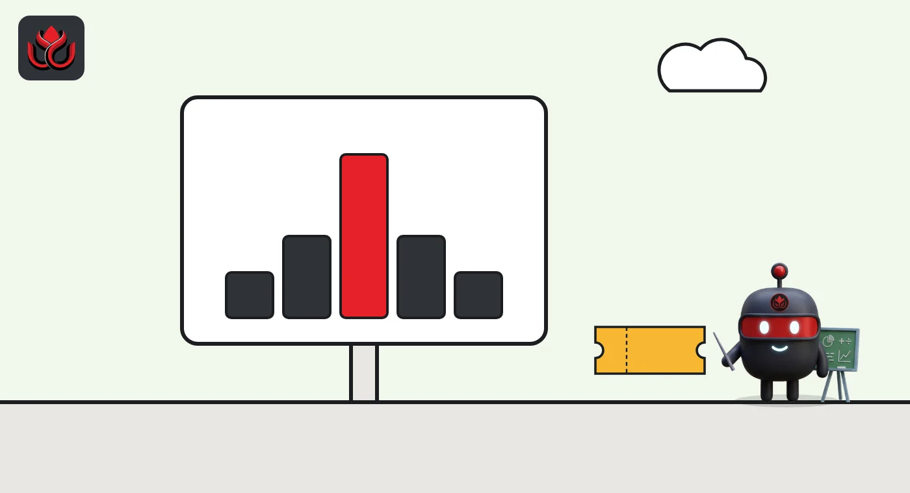
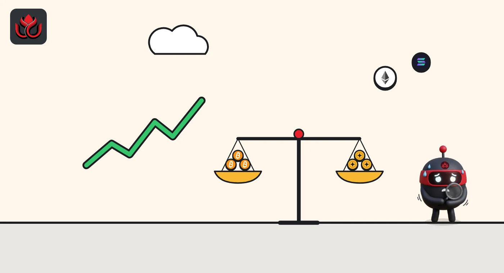

Crypto options expiry and max pain explained: what happens at 3 a.m. ET
Crypto options on Deribit, a major options exchange, expire at 3 a.m. ET (4 a.m. ET during daylight saving time) and settle in cash against a 30-minute average of an index price. Max pain is the strike price at which the most option value would expire worthless, a number traders watch but one that does not control the price.
Key points
- An option is the right, not the obligation, to buy (a call) or sell (a put) at a set price, the strike, on or before a date.
- Deribit options are European style and cash settled: in-the-money options are exercised automatically at expiry and paid in crypto or USDC.
- The settlement price is the 30-minute average of the Deribit index from 2:30 to 3 a.m. ET (3:30 to 4 a.m. ET during daylight saving time).
- Max pain is the strike where option buyers as a group would lose the most. It is a calculation from open interest, not a price target.
 What DeepSea's data shows
What DeepSea's data shows
DeepSea does not track options, but it does show how perpetual futures traders sit going into an expiry. On November 2 its long/short page showed $679.40 million of bitcoin longs against $172.48 million of shorts among the traders it follows.
That book was shrinking. DeepSea recorded the largest change in bitcoin, where net exposure fell by $97.22 million since its previous reading, ahead of ether at $33.39 million.

Data: DeepSea (desea.io), checked November 2, 2026, 7:55 a.m. ET.
What is a crypto option?
An option is a contract that gives its buyer the right to trade an asset at a fixed price, called the strike, by a set date. A call is the right to buy. A put is the right to sell. The buyer pays a price up front, called the premium, and the seller collects it in exchange for taking on the risk.
If bitcoin finishes above a call's strike at expiry, the call is in the money and worth the difference. If it finishes below, the call expires worthless and the buyer loses the premium. Puts work the other way around.
Deribit's settlement rules say its options are European style, which means they can only be exercised at expiry, not before, and are cash settled. Nobody delivers actual bitcoin.
How does an option pay out at expiry?
A worked example with made-up numbers makes the payout clear. Imagine three bitcoin options, all expiring on the same day:
- A call with an $80,000 strike. If the settlement price is $82,000, it pays $2,000 per bitcoin. If settlement is $79,000, it pays nothing.
- A put with a $75,000 strike. If settlement is $72,000, it pays $3,000 per bitcoin. If settlement is $79,000, it pays nothing.
- A call with a $90,000 strike. Unless settlement is above $90,000, it pays nothing.
On Deribit, these payouts happen automatically at settlement. Its rules say in-the-money options are exercised and paid in cash, so the buyer does not need to do anything. The buyer's real profit is the payout minus the premium paid at the start.

When do crypto options expire?
On Deribit, expiring instruments settle at 3 a.m. ET (4 a.m. ET during daylight saving time). Deribit's settlement time does not follow US clocks, so in ET it moved an hour earlier when daylight saving time ended on November 1, 2026. Deribit offers expiries of different lengths, including daily options, and its settlement page says futures usually expire on a Friday. Check each contract's name, which includes its expiry date.
Trading pauses briefly while settlement runs. Expired positions disappear from accounts shortly after settlement.
How is the settlement price set?
Deribit does not use a single trade to settle. Its settlement page says the delivery price is a time-weighted average of the Deribit index over the 30 minutes from 2:30 to 3 a.m. ET (3:30 to 4 a.m. ET during daylight saving time). The index is sampled every 4 seconds during that window.
Averaging over half an hour makes it much harder for one large order to push the settlement price. Deribit also says the delta of expiring options and futures, their sensitivity to price, decays in a straight line to zero over the final 30 minutes, which reduces the need for last-minute hedging trades.
At settlement, in-the-money options are exercised automatically and the profit is paid in cash, in BTC, ETH or USDC depending on the contract. A delivery fee may apply at final expiry, capped as a share of contract value; Deribit says daily options and weekly futures are typically exempt, and settlement itself carries no fee.

What are open interest and notional value?
Open interest is the number of option contracts that are still open, meaning they have been bought and not yet closed or expired. It is the raw material for max pain and for most expiry previews.
Notional value is open interest multiplied by the current price of the underlying coin. If 10,000 bitcoin options are open and bitcoin trades at $80,000, the notional value is $800 million. Headlines about billions of dollars in expiring options use this figure.
Notional value is not the amount of money that changes hands. Options that finish out of the money pay nothing. Only the in-the-money portion, measured by how far each strike is from the settlement price, is actually paid out. That is often a small fraction of the headline number.
Perpetual futures are different: they never expire. Deribit's Inverse Perpetual page describes a contract that tracks the index through funding payments instead of a settlement date, so there is no expiry day to watch.
Open interest also shrinks before expiry, as traders close or roll positions into later dates. A snapshot taken a week before expiry can look quite different from the final picture.
What is max pain?
Max pain is the strike price at which the total value of all open options, calls and puts together, would be lowest at expiry. In other words, it is the settlement price that would cause option buyers as a group the most pain, and option sellers the least.
To work it out, take each possible strike as a candidate settlement price. For each one, add up what every in-the-money call and put would pay, using the open interest at every strike. The candidate with the smallest total payout is max pain.
A simple illustration with made-up numbers: suppose most open calls sit at high strikes and most open puts sit at low strikes. Any settlement price in the middle leaves most of both groups out of the money, so max pain lands in that middle zone, between the biggest call and put clusters.
Does max pain move the price?
Max pain is a popular number in expiry previews, and some traders believe prices drift toward it before big expiries. The idea is that large option sellers, often market makers, hedge in ways that can nudge the price.
Treat that as a theory, not a rule. Max pain is calculated from open interest, which changes up to the last minute, and it says nothing about who holds which side or how they are hedged. Bitcoin's price is set across many spot and futures markets, not only the options market. There is no guarantee that settlement lands anywhere near max pain.
For context, bitcoin traded at about $77,658 on CoinMarketCap at 8 a.m. ET on November 2, 2026.
What should you watch around a big expiry?
- Notional value. The headline dollar figure is the number of contracts times the price. Most of it usually expires worthless, so far less money changes hands.
- Put-to-call ratio. The number of open puts divided by open calls. Below 1 means more calls, a sign of bullish positioning.
- Big strikes near the price. Large open interest close to the current price matters more than large open interest far away.
- The 2:30 to 3 a.m. ET window. That half hour, 3:30 to 4 a.m. ET during daylight saving time, sets the settlement price.
Options positioning is one piece of the derivatives picture. For how perpetual futures traders were positioned recently, see our report on Hyperliquid's big traders.
LC Insight analysis
This section is our reading of the facts above, not a statement of fact.
- We think the settlement window matters more than max pain. A 30-minute index average set at 3 a.m. ET is hard to move, which limits how much any one player can steer an expiry.
- The headline notional value of an expiry overstates its market impact. What matters is how much open interest sits close to the current price and how dealers are hedged around it.
What's next
- Open interest at strikes close to the spot price in the days before a monthly expiry
- Put-to-call ratio shifts ahead of quarterly expiries
- Changes to Deribit settlement or delivery fee rules
Frequently asked questions
What time do Deribit options expire?
At 3 a.m. ET, or 4 a.m. ET during daylight saving time.
Do I receive bitcoin when my option expires in the money?
Not on Deribit. Its options are cash settled, so the profit is paid into your account in BTC, ETH or USDC depending on the contract.
What happens to out-of-the-money options?
They expire worthless. The buyer loses the premium paid and the seller keeps it.
Is max pain a price prediction?
No. It is a calculation of where option buyers would lose the most based on current open interest. Prices often settle away from it.
Disclaimer. This article is based on public information and the sources listed below as of the update time shown. It is for information only and is not investment, legal or tax advice. Figures may change as companies and authorities publish new data.